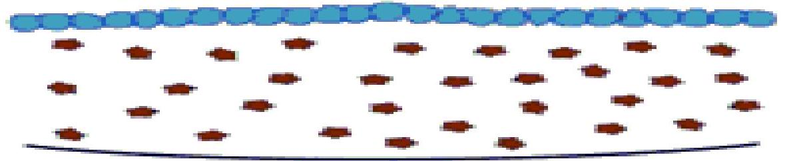
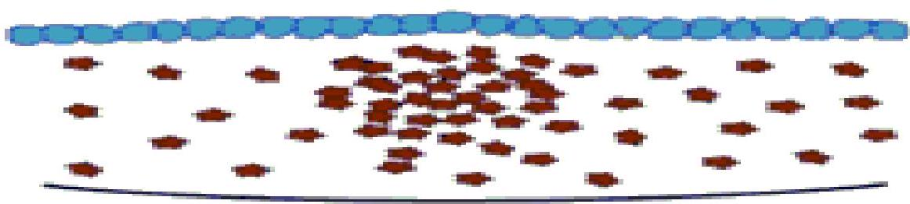
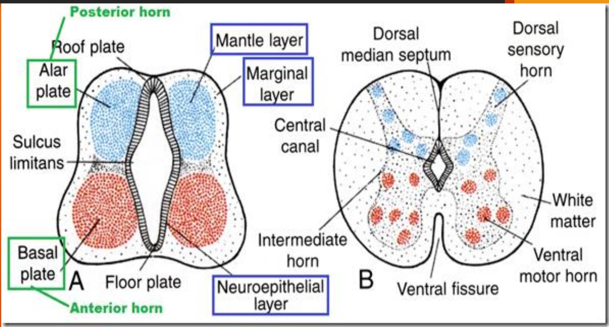

NEURODEVELOPMENT
PART I: NEURULATION & SPINAL CORD DEVELOPMENT
NEURODEVELOPMENT
- Neurulation and spinal cord development
- Brain - cerebrum, cerebellum, brainstem
- Post natal changes of the central nervous system
Expected Learning Outcomes:
- To state the embryonic origin of the nervous system
- Describe the process of primary & secondary neurulation
- Outline neural crest derivatives and associated anomalies
- Parts and derivatives of the neural tube
- Differentiation of the caudal neural tube to form the various components of the spinal cord
- Positional changes in the spinal cord levels
- Congenital malformations of the spinal cord
1 - Origin of the nervous system

- Ectoderm
- Neuroectoderm

- Neurulation
- Neural tube & neural crest
2 - Neurulation

Process of formation of the neural tube primordium of the CNS
- Primary and secondary neurulation
2a - Primary Neurulation
- Neurulation by notochordal induction of the overlying cranial ectoderm

2b - Secondary neurulation
- Neurulation by mesenchymal condensation & transition of the caudal mesoderm

Primary Neurulation
1. Initial epithelium

3. Rolling/folding

4. Closure

5. Neural tube complete

Secondary neurulation
1. Dispersed mesenchyme
2. Mesenchymall condensation
3. Medullary cord/neurall rod

4. Epithelial transition/cavitation

5. Neural tube complete

3 - Neural crest cells
- Characteristics
- Classification**
- Role in development**
- Derivatives
- Associated anomalies
3a - Neural crest derivatives
- Peripheral nervous system
- Endocrine system
- Integument system
- Cardiovascular system
- Craniofacial region
3b - Anomalies associated with neural crest
- Mechanisms - defective migration, induction
- Congenital aganglionic megacolon (Hirshprung's disease)
- Conotruncal septation defects
- 1st arch syndrome
- Disorders of skin pigmentation
4 - Neural tube

- Neuropores
- Communicate with amnion
- Cranial - Day 25
- Caudal - 3 days later
4b - Neural tube derivatives

- Caudal neural tube
- Cranial neural tube:
- Primary brain vesicles
- Secondary brain vesicles
- Other derivatives
5 - Spinal cord development
- Origin
- Differentiation of the caudal neural tube
- Positional changes
- Related congenital anomalies
5a - Cellular organization
- Pseudostratified columnar epithelium
- Neuroblasts, neuroglial cells

5b - Zonation of the neural tube

- Ventricular zone
- Mantle zone
- Marginal zone
The mantle layer

Derivatives of the Mantle Layer

6 - Developmental changes in Spinal Cord Level

7 - Associated Anomalies
- Neural tube defects
- Rachischisis
- Syringomyelia
- Tethered spinal cord
Neural tube defects


Syringomyelia


Summary
- State the embryonic origin of the nervous system (2mks)
- Give an account in the neurulation process (8 mks)
- List Neural Crest Derivatives ( 10 mks )
- Name the zones of the distal neural tube and state the derivatives of each (8mks)
- State basis of spinal cord termination at L1/2 junction in adults (1mk)
- Name the types of the neural tube defects (3mks)
THE END
THE END